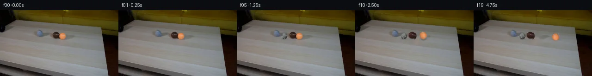

![首帧]()

Round 00
2026-11-04T22:04:26.931776+00:00像素候选变化代码 +222/−0inspection 更新
pixels d533a2a84122df8c · code 3f125660f9ac7aad
查看本轮 generate.py 真实 diff
--- previous/generate.py +++ current/generate.py @@ -0,0 +1,222 @@ +from pathlib import Path + +import cv2 +import numpy as np +from PIL import Image, ImageDraw, ImageFont + +import artifact_io + + +ROOT = Path(__file__).resolve().parent +W, H = 256, 144 + + +def soft_ellipse_mask(width, height, cx, cy, rx, ry, feather=1.0): + yy, xx = np.mgrid[0:height, 0:width] + d = np.sqrt(((xx - cx) / rx) ** 2 + ((yy - cy) / ry) ** 2) + return np.clip((1.0 + feather / max(rx, ry) - d) * max(rx, ry) / feather, 0.0, 1.0) + + +def make_clean_plate(source): + """Numerically remove the two source balls and their tiny contact shadows.""" + yy, xx = np.mgrid[0:H, 0:W] + brown = ((xx - 120.5) / 12.0) ** 2 + ((yy - 55.8) / 11.0) ** 2 < 1.0 + orange = ((xx - 136.1) / 11.2) ** 2 + ((yy - 56.8) / 10.4) ** 2 < 1.0 + shadow = ((xx - 129.0) / 23.0) ** 2 + ((yy - 63.6) / 5.0) ** 2 < 1.0 + mask = ((brown | orange | shadow).astype(np.uint8) * 255) + # A small dilation removes anti-aliased/fuzzy boundary pixels before inpainting. + mask = cv2.dilate(mask, np.ones((3, 3), np.uint8), iterations=1) + return cv2.inpaint(source, mask, 4.0, cv2.INPAINT_TELEA) + + +def bilinear_rgb(image, sx, sy): + return cv2.remap( + image, + sx.astype(np.float32), + sy.astype(np.float32), + interpolation=cv2.INTER_CUBIC, + borderMode=cv2.BORDER_REFLECT_101, + ) + + +def extract_source_ball(source, kind): + """Build a movable source-textured ball; mirror only the originally occluded side.""" + n = 31 + c = (n - 1) / 2.0 + yy, xx = np.mgrid[0:n, 0:n].astype(np.float32) + dx, dy = xx - c, yy - c + if kind == "brown": + cx, cy, rx, ry = 120.5, 55.8, 10.3, 9.4 + # The source orange ball hides the brown ball's far-right cap. + mapped_dx = np.where(dx > 5.0, 10.0 - dx, dx) + else: + cx, cy, rx, ry = 136.0, 56.7, 9.7, 8.8 + # The brown ball hides the orange ball's far-left cap. + mapped_dx = np.where(dx < -5.0, -8.0 - dx, dx) + sx = cx + mapped_dx + sy = cy + dy + rgb = bilinear_rgb(source, sx, sy).astype(np.float32) + d = np.sqrt((dx / rx) ** 2 + (dy / ry) ** 2) + alpha = np.clip((1.045 - d) / 0.105, 0.0, 1.0).astype(np.float32) + + # Give mirrored caps the same broad spherical shading as their corresponding side. + cap = (dx > 5.0) if kind == "brown" else (dx < -5.0) + nz = np.sqrt(np.clip(1.0 - np.minimum(d, 1.0) ** 2, 0.0, 1.0)) + broad = 0.78 + 0.22 * nz + rgb[cap] *= broad[cap, None] + return np.clip(rgb, 0, 255), alpha + + +def warp_composite(frame, sprite_rgb, sprite_alpha, cx, cy, angle_deg=0.0): + n = sprite_alpha.shape[0] + c = (n - 1) / 2.0 + matrix = cv2.getRotationMatrix2D((c, c), angle_deg, 1.0) + matrix[0, 2] += cx - c + matrix[1, 2] += cy - c + premultiplied = sprite_rgb * sprite_alpha[..., None] + rgb_warp = cv2.warpAffine( + premultiplied, + matrix, + (W, H), + flags=cv2.INTER_CUBIC, + borderMode=cv2.BORDER_CONSTANT, + borderValue=0, + ) + alpha_warp = cv2.warpAffine( + sprite_alpha, + matrix, … diff truncated; 135 more lines …